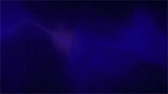
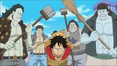

Haki is a mysterious power that allows individuals to harness their own spiritual energy for various superhuman feats. As this energy manifests from willpower, it is theoretically accessible to all living creatures in the world; the vast majority, however, are unable to use it, either because they are unaware of its existence or due to lack of adequate training to achieve mastery. Haki users are common in the New World, rare in Paradise, and virtually non-existent in the four Blues. Current understandings of Haki define three distinct types, each tied to a different ability: sensing others' spiritual energy to anticipate their movements, producing a protective coating of energy from one's own body, and—for a certain group of "chosen ones"—overwhelming the willpower of others.[2][3]

1. Observation Haki (見聞色の覇気, Kenbunshoku no Haki?), which gives the user a sixth sense of the world around them, allowing them to sense the presence, strength, and emotions of other people, even if they are out of sight or far away. It also grants limited precognitive abilities, allowing the user to sense their opponents' intentions and predict their actions and attacks before they happen.[3]

2. Armament Haki (武装色の覇気, Busōshoku no Haki?), which allows the user to use their own aura as armor to defend against attacks, as well as make their own attacks more potent.[3] It can also be used to bypass Devil Fruit defenses, such as the intangibility of a Logia. A person can apply the armament to a section of their body, over their entire body, and even imbue it onto their weapons.[34][3] A coating of Armament Haki will cause the coated area to turn a shiny black, and a particularly thick and powerful coating will have a flame-like pattern along its edge.
3. Supreme King Haki (覇王色の覇気, Haōshoku no Haki?), which grants the user the ability to unleash their own willpower in order to overpower the will of others.[3] This results in victims being mentally overwhelmed by the user, with particularly weak-willed foes instantly losing consciousness. It can also apply pressure onto objects and damage them, a clash between two particularly strong Supreme King Haki users is capable of "splitting the heavens". Unlike the other types of Haki which can be learned by anyone, Supreme King Haki is a rare ability that only one in several million people are born with the ability to use.
